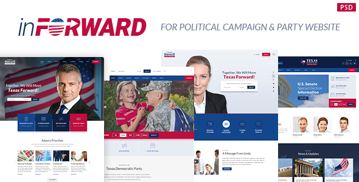

Created: 24/09/2017
By: Monkeysan
Thank you for purchasing my Template. If you have any questions that are beyond the scope of this help file, please feel free to email via my user page contact form here. Thanks so much!
inForward - Political Campaign, Party, Nonprofit Template - Based on Bootstrap’s and Foundation 12 column Responsive grid Template. CandidatePro - is a fully complete creative PSD template that includes 38 pages. The design is modern, clean and elegant. inForward is a next generation of our Classic Candidate Political and multi-purpose PSD template. It’s suitable for any nonprofit organization, such as charity, political campaign, party, pet rescue etc.. It includes all needed pages for a website development.
We added special Issues and Endorsements pages, Events and Shop Pages, different Portfolios pages such as Instagram Feed, Flickr wall and Youtube/Vimeo Gallery. All psd files are well-organized and labeled which makes the customization process more smooth and painless. Just take a look at this wonderful Photoshop template pages and you will be impressed even more!
All layers inside the PSD files are arranged. You can see locored Groups. There are hidden groups where you can find hovers or some additional elements
For example 01-home1.psd:
You can find 38 PSD files. Each file has serial number - name of page.
I've included 3 fonts with this Template:
Once again, thank you so much for purchasing this theme. As I said at the beginning, I'd be glad to help you if you have any questions relating to this theme. No guarantees, but I'll do my best to assist. If you have a more general question relating to the themes on ThemeForest, you might consider visiting the forums and asking your question in the "Item Discussion" section or http://velikorodnov.ticksy.com/.